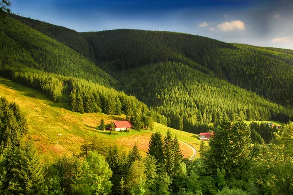

Культурна спадщина є важливою частиною ідентичності будь-якої нації, і Україна
не є винятком. Вона включає в себе не тільки архітектурні пам'ятки та мистецькі твори, але й мову,
традиції, звичаї та народні ремесла. Збереження культурної спадщини є необхідним для підтримання
національної самобутності та передачі цінностей майбутнім поколінням

Збереження національної ідентичності
Культурна спадщина формує основу національної ідентичності. Вона допомагає українцям
усвідомлювати
свою
унікальність і значимість на світовій арені. Мова, література, музика, традиційні ремесла — все
це
об'єднує націю, робить її неповторною і допомагає зберегти зв'язок між минулим, теперішнім і
майбутнім.
Освітня та виховна функція
Культурна спадщина має важливе освітнє значення. Вона допомагає передавати знання про історію,
мистецтво
і традиції молодому поколінню. Вивчення культурної спадщини сприяє розвитку національної
свідомості,
вихованню патріотизму та поваги до свого народу.
Економічний потенціал
Збереження та популяризація культурної спадщини також має економічний аспект. Туристична
привабливість
країни багато в чому залежить від стану її культурних пам'яток. Туризм приносить значні доходи в
бюджет
держави, сприяє розвитку інфраструктури та створенню нових робочих місць. Україна, багата на
історичні
та культурні пам'ятки, має великий потенціал для розвитку культурного туризму.
Міжнародне визнання
Збереження культурної спадщини сприяє зміцненню міжнародних зв'язків і підвищенню авторитету
країни на
світовій арені. Пам'ятки, що входять до списку Світової спадщини ЮНЕСКО, є символом визнання
унікальності та значимості української культури для всього людства. Це не тільки підвищує
інтерес до
країни, але й допомагає залучати міжнародну підтримку у збереженні та реставрації пам'яток